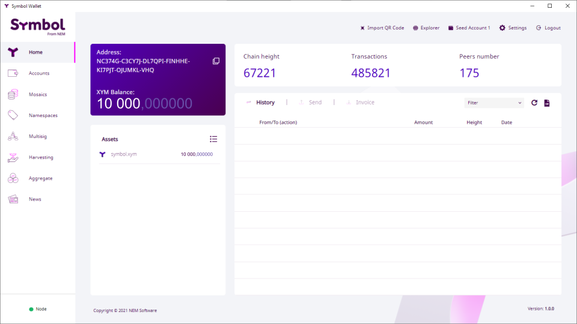

このガイドでは、 Symbol ロンチ前 (2021年3月12日) のオプトインプロセスに登録した場合に、あなたにへ授与された XYM (Symbol の基軸通貨) へのアクセス方法を説明します。
それを見過ごしていた場合は Retrieving your XYM from a post-launch opt-in ガイドに従って、オプトインすることもできます。
NEM NIS1 はコミュニティによって作成された NEM のオリジナルブロックチェーン オファリングであり、2015 年から稼働を続けています。
Symbol は NEM の次世代ブロックチェーン であり、ゼロから書き直され、2021 年 3 月にローンチされました。
To quickstart Symbol’s adoption, an opt-in process was established which awarded one XYM in the new Symbol blockchain for every XEM (NIS1’s native currency) held in the NIS1 blockchain.

In return, the user received a Symbol Mnemonic, a 24-word phrase which encoded a Symbol account for the future Symbol blockchain.
これは Symbol ニーモニックを含む NEM Wallet が作成した例です。
Then, on March 12th, 2021 the NIS1 Snapshot took place: When the NIS1 blockchain reached block height 3’105’500 a picture was taken of all accounts and their assets.
Finally, on March 16th, 2021 the Symbol blockchain was launched and all opted-in accounts were automatically created:
For every opted-in NIS1 account that held at least 100 XEM at the snapshot, a Symbol account was created holding that same amount of XYM.
このガイドでは、この新しい Symbol アカウントとそのアセットにアクセスする方法について説明します。
注釈
If you did not opt-in before the new Symbol blockchain launched, you can still opt-in post-launch by following the Retrieving your XYM from a post-launch opt-in guide.
あなたのプラットフォーム向けの Symbol Desktop Wallet を ダウンロードしてインストール します。
これは NIS1 ブロックチェーンとの疎通に使用される NEM ウォレットとは異なることに注意してください。
ウォレットを開いて 新しいプロファイルを作成? をクリックします:

Import mnemonic をクリックします:

いくつかのプロファイルデータを入力します。プロファイルには複数の Symbol アカウントを含めることができ、それらを整理するのに役立ちます。

Mainnet ネットワークタイプ を選択します。次へ をクリックします。Write every word in the Symbol Mnemonic that you obtained when you opted-in (See the previous section):
次へ をクリックします。On the Selected Accounts screen, you will be presented with the list of accounts that can be derived from the mnemonic, including the one that you opted-in and its balance.

次へ をクリックします。利用規約 に同意して 完了 をクリックします:

ウォレットのメイン画面が表示され、オプトインした残高が表示されます:
Your imported accounts are now ready to use. In the Accounts tab you can see all of them and give them more meaningful names if you want.
Take a look at the rest of the guides to learn what you can do with these accounts. For example, ２つのアカウント間でモザイクとメッセージを送信.
Before you go
It is recommended that you move your funds from the opted-in account to the other one you imported in step 6 above (called a Seed account, because it was obtained from a seed Symbol mnemonic).
Accounts opted-in from the NEM Wallet are special and cannot be derived from the mnemonic. Therefore, in the future, if you used a Wallet other than the Symbol Desktop Wallet to recover your account from the mnemonic, it might not recover your opted-in account.
ただし、他のすべてのシードアカウントが復元されるため、資産を移動してシードアカウントのみを使用することを推奨します。
オプトインしたアカウントを復元する際に問題が発生した場合、確認する項目リストです。
スナップショット時点で NIS1 アカウントの残高 が少なくとも 100 XEM であったことを確認してください。
Check that you are using the correct Symbol mnemonic. Did you do several attempts at opting-in and obtained different mnemonics?
オプトインレポート でアドレスを検索して、NIS1 アカウントが正常にオプトインされたことを確認します。
アカウントがリストにない場合は、他のタブをチェックして原因を発見してください。
Symbol Mobile Wallet を使用してオプトインしていた場合、アカウントが 既知の Symbol モバイルウォレットの問題 の影響を受ける 35 のアカウントのうちの 1 つではないことを確認してください。
NEM ヘルプデスク は他のすべてが失敗した場合に役立ちます:
{kind=link}
{kind=link}
{kind=link}